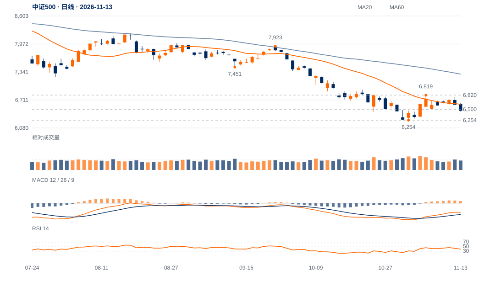

近端守位先受损
11日收6713.18后连续两日回落，13日收6465.49，跌回原6500观察位下方；收盘位置仅8%，日内承接未形成明显回收。
短线转入6500下方观察，反抽若无法收回，6254前低的测试权重将提高。当前距6500仅约0.19ATR，仍需用后续反抽质量区分轻穿与有效下破。

查看大图 ↗先重新保持6500，再看6613；中期升级仍需原6820条件。
反抽6500失败强化偏弱；6254失守撤销当前前低承接解释。
11日收6713.18后连续两日回落，13日收6465.49，跌回原6500观察位下方；收盘位置仅8%，日内承接未形成明显回收。
9月22日7922.62至11月2日6253.79的跌幅约21.1%；现价仅修复这段价差的12.7%。本周高6779.25仍低于6787.32中峰。
当前20日与60日均线均在上方，周MACD仍负；日线正柱未对应中峰突破，反弹不足以改变中期下降背景。
6500穿越幅度较小、13日量比0.94，暂非极端放量破位。迅速收回6500并形成更高低点，会削弱向6254回测的判断。